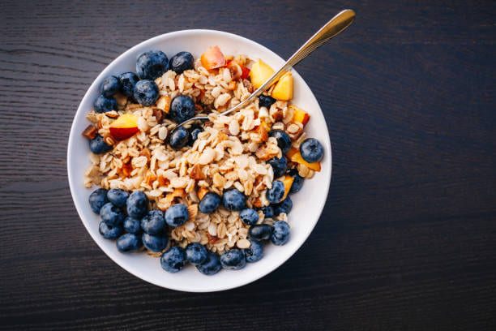
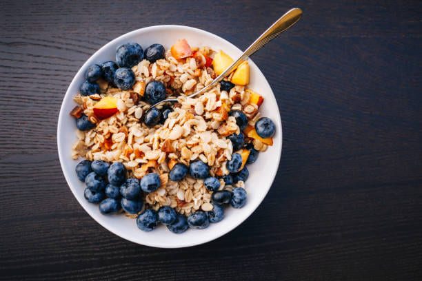
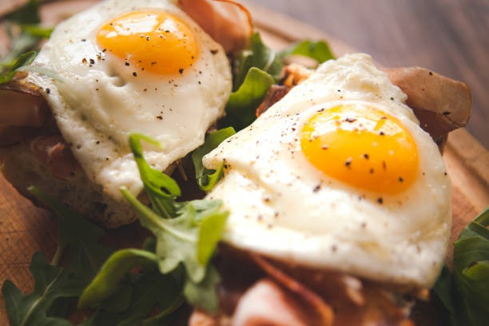
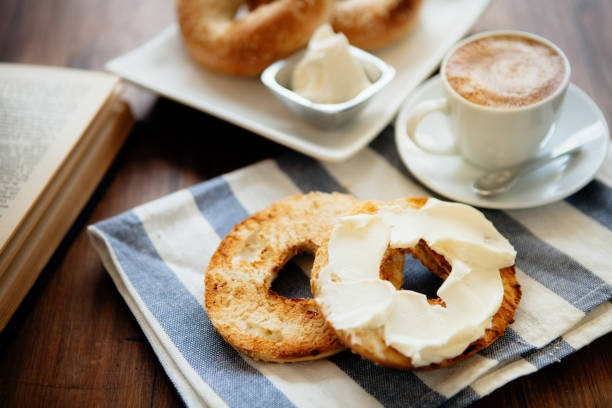
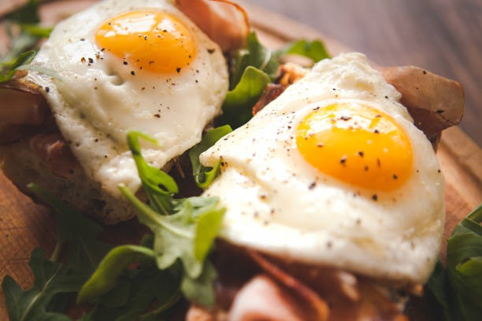
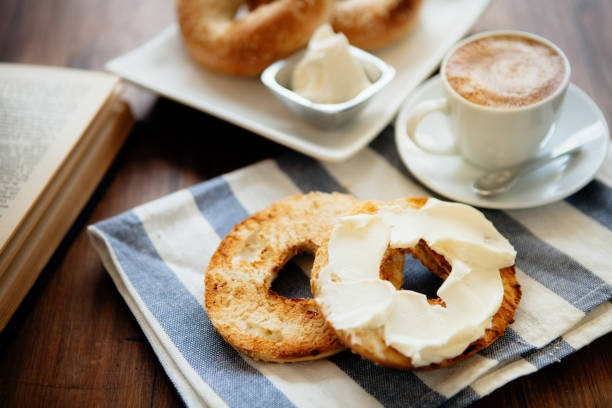

SweetCoffe
Elegi entre los mejores lugares |
¬°Bienvenido al rinc√≥n de los mejores desayunos y meriendas! Explora y descubre los lugares más deliciosos de la ciudad. ¬°A disfrutar de sabores √∫nicos! üåûüçΩÔ∏è
En Brunch Haven, la mañana comienza con una selección ecléctica de deliciosos desayunos y meriendas que te harán desear que el sol nunca se ponga. Desde los clásicos pancakes hasta los huevos Benedict, cada plato está preparado con esmero y pasión. El ambiente acogedor y la excelente atención al cliente hacen de Brunch Haven el lugar ideal para comenzar tu día con energía.
A pesar de la deliciosa comida, el espacio puede llenarse rápidamente durante las horas punta, lo que podría resultar en tiempos de espera más largos de lo deseado. La falta de reservas hace que sea complicado planificar una visita, especialmente para grupos más grandes.
 

Morning Bites Café es el lugar perfecto para aquellos que buscan un desayuno o merienda rápida pero deliciosa. Con una variedad de opciones frescas y sabrosas, desde sándwiches de desayuno hasta ensaladas de frutas, este café ofrece algo para todos los gustos. El ambiente relajado y el personal amable garantizan una experiencia agradable en cada visita.
Aunque la comida es deliciosa, a veces el espacio puede llenarse y puede ser difícil encontrar asientos disponibles, especialmente durante los fines de semana. Esto puede hacer que algunos clientes opten por buscar otros lugares menos concurridos.
En Sunrise Eats, cada bocado es una explosión de sabor que te hace sentir como si estuvieras en el paraíso del desayuno. Desde sus exquisitos waffles belgas hasta sus omelets perfectamente sazonados, la calidad y el sabor de la comida son incomparables. El ambiente acogedor y el servicio atento hacen que cada visita sea una experiencia memorable.
Aunque la comida es excelente, a veces el servicio puede ser un poco lento durante las horas pico. Esto puede causar frustración en algunos clientes, especialmente aquellos que tienen poco tiempo para disfrutar de su comida.
Sweet Morning Café ofrece una experiencia de desayuno y merienda que deleitará tu paladar y calentará tu corazón. Con una amplia selección de platos dulces y salados, desde tortitas esponjosas hasta tostadas francesas decadentes, este café es el lugar perfecto para satisfacer tus antojos matutinos. El ambiente acogedor y el personal amable te hacen sentir como en casa desde el momento en que entras por la puerta.
Sweet Morning Café ofrece una experiencia de desayuno y merienda que deleitará tu paladar y calentará tu corazón. Con una amplia selección de platos dulces y salados, desde tortitas esponjosas hasta tostadas francesas decadentes, este café es el lugar perfecto para satisfacer tus antojos matutinos. El ambiente acogedor y el personal amable te hacen sentir como en casa desde el momento en que entras por la puerta.
 



En Rise & Shine Diner, el desayuno se sirve con una sonrisa. Con una decoración retro y un ambiente acogedor, este diner te transporta a la época dorada de los desayunos caseros. Desde los clásicos huevos revueltos hasta las tortitas esponjosas, cada plato está preparado con esmero y atención al detalle. La comida deliciosa y el servicio amable hacen de este lugar una parada obligatoria para los amantes del desayuno.
El espacio puede llenarse rápidamente, lo que puede resultar en tiempos de espera durante las horas punta. Esto puede ser frustrante para los clientes que tienen poco tiempo y buscan una comida rápida.
Sunny Side Café es un refugio acogedor que ofrece una experiencia de desayuno y merienda con un toque soleado. Desde sus suculentos sándwiches de desayuno hasta sus coloridas ensaladas de frutas, cada plato está lleno de frescura y sabor. El ambiente luminoso y el personal amable hacen que cada visita sea una experiencia memorable.
En las horas punta, puede haber una espera para conseguir mesa debido a la popularidad del lugar. Esto puede ser inconveniente para aquellos que tienen una agenda ajustada y necesitan una comida rápida.
Bird Café, el desayuno es más que una comida, es una experiencia. Con una amplia variedad de platos, desde los clásicos huevos Benedict hasta los saludables smoothie bowls, cada bocado está lleno de sabor y frescura. El ambiente acogedor y el servicio atento hacen que este café sea el lugar perfecto para comenzar el día con energía.
Durante las horas punta, el espacio puede llenarse rápidamente, lo que puede resultar en tiempos de espera más largos. Esto puede ser inconveniente para los clientes que tienen poco tiempo y buscan una comida rápida.